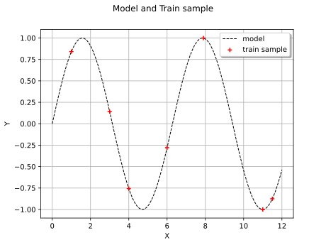
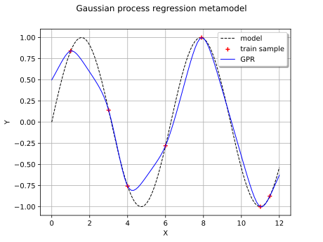

Note
Go to the end to download the full example code.
Gaussian Process Regression : generate trajectories from the metamodel¶
The main goal of this example is to show how to simulate new trajectories from a Gaussian Process Regression metamodel(refer to Gaussian process regression).
Introduction¶
We consider the sine function:
![\model(x) = \sin(x)]()
for any ![x\in[0,12]]() .
.
We want to create a metamodel of this function. This is why we create a sample of ![n]() observations of the function:
observations of the function:
![y_i = \model(x_i)]()
for ![i=1,...,7]() , where
, where ![x_i]() is the i-th input and
is the i-th input and ![y_i]() is the corresponding output.
is the corresponding output.
We consider the seven following inputs :
|
1 |
2 |
3 |
4 |
5 |
6 |
7 |
|---|---|---|---|---|---|---|---|
|
1 |
3 |
4 |
6 |
7.9 |
11 |
11.5 |
![i]()
We are going to consider a Gaussian Process Regression metamodel with:
a constant trend,
a Matern covariance model.
In the Gaussian Process Regression : quick-start example, we detail the estimation of this metamodel. Refer to it for further details: we only focus here on the simulation of new trajectories.
import openturns as ot
import openturns.viewer as otv
Creation of the metamodel¶
We define the function g, the training sample (x_train, y_train) and the test sample (x_test, y_tst).
g = ot.SymbolicFunction(["x"], ["sin(x)"])
x_train = ot.Sample([[x] for x in [1.0, 3.0, 4.0, 6.0, 7.9, 11.0, 11.5]])
y_train = g(x_train)
n_train = x_train.getSize()
n_train
7
xmin = 0.0
xmax = 12.0
n_test = 101
step = (xmax - xmin) / (n_test - 1)
myRegularGrid = ot.RegularGrid(xmin, step, n_test)
x_test = myRegularGrid.getVertices()
y_test = g(x_test)
In order to observe the function and the location of the points in the input design of experiments, we define the following function which plots the data.
def plot_1d_data(x_data, y_data, type="Curve", legend=None, color=None, linestyle=None):
"""Plot the data (x_data,y_data) as a Cloud/Curve"""
if type == "Curve":
graphF = ot.Curve(x_data, y_data)
else:
graphF = ot.Cloud(x_data, y_data)
if legend is not None:
graphF.setLegend(legend)
if color is not None:
graphF.setColor(color)
if linestyle is not None:
graphF.setLineStyle(linestyle)
return graphF
Here, we draw the model and the train sample.
graph = ot.Graph("Model and Train sample", "X", "Y")
graph.add(
plot_1d_data(
x_test, y_test, type="Curve", legend="model", color="black", linestyle="dashed"
)
)
graph.add(
plot_1d_data(x_train, y_train, type="Cloud", legend="train sample", color="red")
)
graph.setLegendPosition("upper right")
view = otv.View(graph)

We use the ConstantBasisFactory class to define the trend and the MaternModel class to define the covariance model.
This Matérn model is based on the regularity parameter ![\nu=3/2]() .
.
dimension = 1
basis = ot.ConstantBasisFactory(dimension).build()
covarianceModel = ot.MaternModel([1.0] * dimension, 1.5)
We estimate the Gaussian process ![Y]() with the class
with the class GaussianProcessFitter.
fitter_algo = ot.GaussianProcessFitter(x_train, y_train, covarianceModel, basis)
fitter_algo.run()
fitter_result = fitter_algo.getResult()
print(fitter_result)
GaussianProcessFitterResult(covariance model=MaternModel(scale=[1.27446], amplitude=[0.822252], nu=1.5), basis=Basis( [[x0]->[1]] ), trend coefficients=[0.00736634])
We observe that the scale and amplitude hyper-parameters have been optimized by the
run() method, while the ![\nu]() parameter has remained unchanged, as expected.
parameter has remained unchanged, as expected.
Then, we condition the gaussian process to make it interpolate the data set using the class
GaussianProcessRegression.
gpr_algo = ot.GaussianProcessRegression(fitter_result)
gpr_algo.run()
gpr_result = gpr_algo.getResult()
print(gpr_result)
GaussianProcessRegressionResult(covariance models=MaternModel(scale=[1.27446], amplitude=[0.822252], nu=1.5), covariance coefficients=0 : [ 1.13908 ]
1 : [ 1.01757 ]
2 : [ -1.76275 ]
3 : [ -0.559143 ]
4 : [ 1.78756 ]
5 : [ -1.6194 ]
6 : [ -0.00292259 ], basis=Basis( [[x0]->[1]] ), trend coefficients=[0.00736634])
We get the metamodel and the predictions on the test sample.
gpr_metamodel = gpr_result.getMetaModel()
y_test_MM = gpr_metamodel(x_test)
The following function plots the Gaussian Process Regression predictions on the test sample.
graph = ot.Graph("Gaussian process regression metamodel", "X", "Y")
graph.add(
plot_1d_data(
x_test, y_test, type="Curve", legend="model", color="black", linestyle="dashed"
)
)
graph.add(
plot_1d_data(x_train, y_train, type="Cloud", legend="train sample", color="red")
)
graph.add(
plot_1d_data(
x_test, y_test_MM, type="Curve", legend="GPR", color="blue", linestyle="solid"
)
)
graph.setLegendPosition("upper right")
view = otv.View(graph)

Simulate new trajectories¶
In order to generate new trajectories of the conditioned Gaussian process, we use the class
ConditionedGaussianProcess, which provides a Process.
It is created from the result of the Gaussian Process Regression algorithm.
process = ot.ConditionedGaussianProcess(gpr_result, myRegularGrid)
The method getSample() method returns a ProcessSample.
sphinx_gallery_thumbnail_number = 3
trajectories = process.getSample(10)
type(trajectories)
graph = trajectories.drawMarginal()
graph.add(
plot_1d_data(
x_test,
y_test,
type="Curve",
legend="model",
color="black",
linestyle="dashed",
)
)
graph.add(
plot_1d_data(x_train, y_train, type="Cloud", legend="train sample", color="red")
)
graph.setXTitle("X")
graph.setYTitle("Y")
graph.setLegendPosition("upper right")
graph.setTitle("10 simulated trajectories")
view = otv.View(graph)

Display all figures.
otv.View.ShowAll()